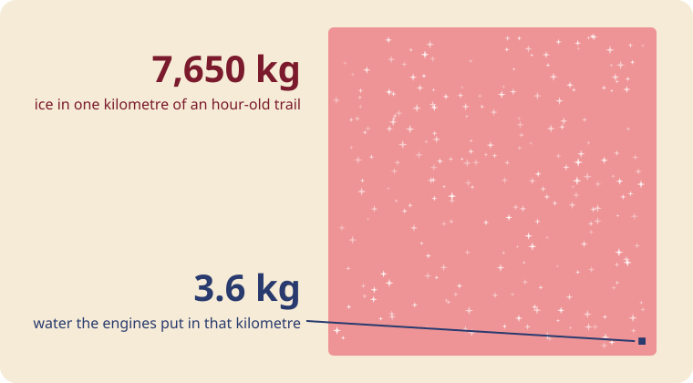
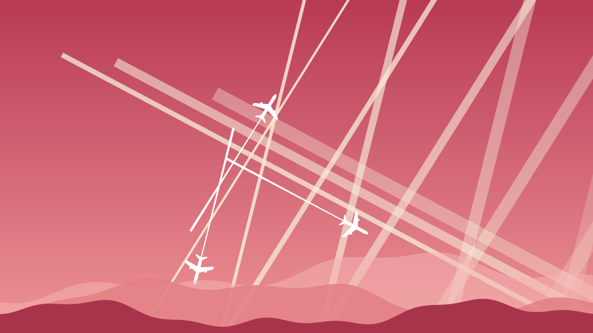

Make a trail
Three things decide it: how cold the air is, how wet it is, and how much heat the engine throws away. Move them.
Reading the chart. The gold curve is soaked air, measured against water. The pink dashes are soaked air measured against ice, which fills up sooner. Exhaust leaves the engine hot and wet, far up and to the right, and mixes into your air along the straight line. If the line pokes above the gold curve, droplets form and freeze at once: a trail. If your dot sits above the pink dashes, the ice has no reason to leave: the trail stays.
G = EI · cp · p ⁄ ( ε · Q · (1 − η) )
Reading it: G is how steep the straight line is. EI is 1.23 kg of water per kg of fuel. cp is the heat it takes to warm air. p is the air pressure at the plane's height. ε is 0.622, how light water vapour is next to air. Q is the heat in a kilogram of fuel. η is the share of that heat that pushes the plane. At 34,000 ft this gives trails below -50.6 °C in bone-dry air and below -41.1 °C in soaked air.
Three planes, three heights
Each line is a plane at a different height, in its own layer of air.
The better engine makes the trail
German researchers flew an Airbus A340 and a Boeing 707 wing by wing, at the same height, in the same air, and watched from a third plane. The A340, with its more efficient engines, left a trail. The 707 left none. An engine that turns more of its heat into push sends out cooler exhaust with the same water in it, so it reaches saturation sooner.
Could a plane carry it?

A narrow-body jet burns about 2,400 kg of fuel an hour and makes 3.6 kg of water for every kilometre it flies. An hour later, a spreading trail can be 2 km wide and 500 m deep. At −50 °C with the air 20% past ice saturation, each cubic metre gives up about 8 milligrams of ice to the crystals the plane left behind. Multiply: 7,650 kg of ice in that kilometre. The engines supplied 3.6 kg. The sky supplied the rest.
A tank could not do this. An airliner's whole payload, about 20 tonnes, would fill 2.6 km of that trail. The IPCC put it plainly in 1999: a new trail's ice grows to exceed the plane's water “by more than two orders of magnitude”.
Old trails, spreading
Hours-old trails fan out into thin cloud. The air was already holding more water than ice can stand.
Grids, X's and stripes

A trail points the way the plane was going. You can read its bearing off the sky.
Airliners fly set highways in the sky, called jet routes, between 18,000 and 45,000 ft. Two routes crossing make an X. One busy route makes parallel stripes a few minutes apart. The wind pushes every stripe sideways, and each stripe is a different age, so each has moved a different distance: the oldest is widest and furthest downwind. A criss-cross sky is a day when the air is wet enough to keep every trail. The picture above is drawn from that rule alone: three routes, a plane every half hour or so on each, a steady wind.
The whole sky's worth
Trails over Spain and Portugal from NASA's Terra satellite: the jet routes, drawn in ice.
Trails before jets
B-17s of the 390th Bomb Group over Europe, their fighter escorts looping trails above them. Piston engines breathe out water too.
Questions

NaNWhy does one plane leave a long trail and the next plane none?

BeerThey are at different heights, and wet air comes in layers. The panel above shows three heights; they often disagree. The engine matters too: see below.
NaNThey didn't use to last this long.
BeerThey did in 1943 (the bombers above). There are more planes now: 153,359 commercial flights on 23 July 2026, a record day. And newer engines make trails in warmer air.
NaNWhat about the photos of barrels inside planes?
BeerWater ballast for test flights. Boeing's photo archive labels them so. On the Airbus A350 test plane each barrel holds about 300 kg of water, pumped fore and aft to move the balance point.
NaNSoil tests found aluminium and barium.
BeerAluminium is about 8% of the Earth's crust, the most common metal in it. Barium runs about 628 parts per million. Any soil test anywhere finds both.
NaNThere are patents and papers about spraying the sky.
BeerThere are. They are ideas on paper. The designs put the spray near 20 km up, higher than airliners fly, from a plane that has not been built. Harvard's one planned balloon test was dropped in March 2024 before it flew.
NaNThe Air Force wrote about owning the weather.
BeerA 1996 student paper imagining the year 2025. Its front page says it holds fictional scenarios and is not Air Force policy.
NaNWeather modification is real, isn't it?
BeerYes. Thailand's royal rainmaking has flown since 1969: salt near cloud base, dry ice below it, silver iodide at the tops, up to about 21,500 ft. It seeds clouds that are already there. A trail at 35,000 ft in clear blue sky is something else.
NaNWho else says so?
BeerIn 2016, 77 atmospheric chemists and geochemists were asked. 76 had seen no evidence of a secret spraying program. In 2025 the US EPA, under an administrator who took the question up, wrote that it knows of no trail ever made on purpose for weather over the US.
NaNSo do trails matter at all?
BeerThey do, for warmth. Trail cloud holds heat in: about 57 of aviation's 101 milliwatts per square metre of warming in 2018, more than its carbon dioxide. Airlines now test steering around trail-making air. That is the trail story worth talking about.
NaNHow do I settle it myself?
BeerMake a prediction. Read the panel at the top, write down "long trails at 3 pm", then look up at 3 pm. A spraying program would not follow tomorrow's humidity forecast.
Trails from wings
Air speeding over a wing drops in pressure and cools, and wet air makes a brief cloud. Gone the moment it leaves the wing.
Send this instead of arguing
Sources
- Schumann 1996, On conditions for contrail formation from aircraft exhausts, Meteorol. Z. 5:4–23
- Appleman 1953, The formation of exhaust condensation trails by jet aircraft, BAMS 34:14–20
- Murphy & Koop 2005, vapour pressures of ice and supercooled water, QJRMS 131:1539
- pycontrails: Schmidt–Appleman code and Jet A constants
- Kärcher 2018, Formation and radiative forcing of contrail cirrus, Nature Communications 9:1824
- IPCC 1999, Aviation and the Global Atmosphere, §3.4
- Schumann, Busen & Plohr 2000, propulsion efficiency and contrail formation, J. Aircraft 37(6)
- Shearer, West, Caldeira & Davis 2016, expert survey, Environ. Res. Lett. 11:084011
- EPA, FAA, NASA, NOAA 2000, Aircraft Contrails Factsheet
- EPA, FAA, NOAA 2025, Contrails Fact Sheet
- EPA, Geoengineering: frequent questions
- Boeing Images: 747-100 flight test ballast
- Lead Stories 2023: barrels are ballast tanks (A350)
- USGS: aluminium in the crust
- USGS: barium in the crust
- Smith & Wagner 2018, stratospheric aerosol injection tactics and costs, Environ. Res. Lett. 13:124001
- Harvard Salata Institute: an update on SCoPEx, March 2024
- House et al. 1996, Weather as a Force Multiplier: Owning the Weather in 2025
- Royal Rainmaking patent EP1491088A1
- Thai MFA: The Royal Rainmaking Project
- Department of Royal Rainmaking and Agricultural Aviation
- Lee et al. 2021, aviation's contribution to climate forcing, Atmos. Environ. 244:117834
- American Airlines 2023: contrail-avoidance trial
- Airways Magazine: Flightradar24 record day, July 2026
- FAA Aeronautical Information Manual 5-3-4: jet routes
- Wikipedia: Chemtrail conspiracy theory
- Open-Meteo forecast API (ECMWF IFS), CC BY 4.0
- adsb.lol live planes, ODbL
- Wikimedia Commons
Photographs from Wikimedia Commons, credited on each. Drawings and code: NaNoBotCo. NaN and Beer drawn by NaNoBotCo.